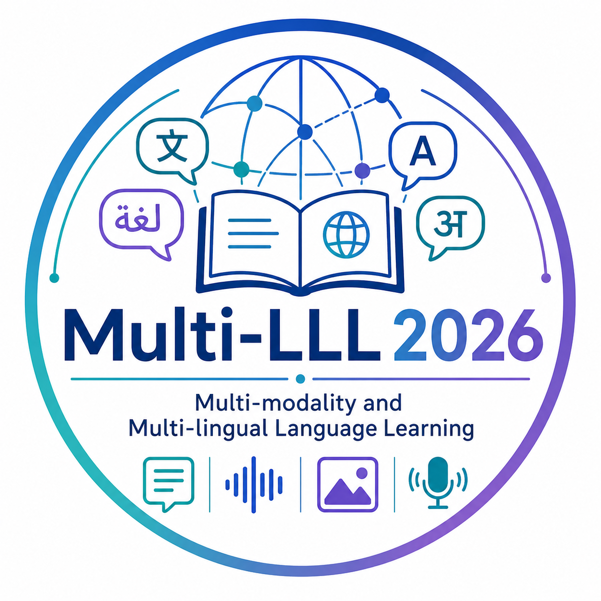

09:05–09:45
MultiLLL-01

Multi-LLL 2026In Conjunction with AACL-IJCNLP 2026
Harnessing technology to advance inclusive, multi-modal, and multilingual language learning for a connected world.
Human communication is inherently multi-modal, combining spoken words, facial expressions, voice, body language, and visual context. Multi-lingual language learning helps bridge communication gaps in multicultural societies and supports more inclusive education.
This workshop focuses on multi-modality and multi-lingual language learning, including keynote and paper presentations as well as a shared task challenge. It aims to bring together researchers from NLP, computer vision, speech, education, and AI to investigate innovation in language learning for English, Chinese, and other low-resource languages.
Research on diverse languages promotes linguistic diversity, supports underrepresented learner populations, and yields insights applicable to education and everyday communication settings.
Online participation details will be announced once confirmed.
17 min presentation + 2 min Q&A + 1 min transition
17 min presentation + 2 min Q&A + 1 min transition
2 min presentation + 5 min Q&A + 1 min transition
We invite high-quality theoretical and experimental submissions on AI topics for language education and language learning.
Multi-modal and multi-lingual language learning systems, foundation models for education, and adaptive tools for diverse learners.
Benchmarks, diagnostic methods, shared-task systems, and evaluation frameworks for language learning technologies.
Intelligent tutoring, feedback generation, writing support, grammar correction, and applications for real-world education.
Empirical studies on English, Chinese, low-resource languages, CFL learning, accessibility, and cross-linguistic transfer.
Note: All deadlines are Anywhere on Earth (AoE).
The workshop is archivable, and its proceedings will be published in the ACL Anthology. All accepted and presented papers will appear in the workshop proceedings. At least one author of each accepted paper must register for the workshop and present the work at the hybrid 1-day event at AACL-IJCNLP 2026.
All submissions must follow ACL Policy on Publication Ethics, including ACL's Guidelines for Generative Assistance in Authorship. Dual submissions are not allowed. Submissions are editable, including authorship, until the deadline; no authorship changes are allowed after submission.
The workshop solicits double-blind paper submissions on multi-modal and multilingual language learning. We welcome submissions in the form of research ideas, empirical studies, deployed systems, benchmark or evaluation papers, review papers, best-practice papers, and lessons learned from real-world applications.
Workshop paper submissions may be up to 8 pages in the main body, with unlimited but reasonable references and appendices. Papers must include a mandatory section on the Limitations of the Work, placed after the conclusions and before the references. Authors must also include a mandatory Declaration on Generative AI section in the paper. Authors may optionally include a section discussing ethical considerations and concerns regarding their research.
In addition to the workshop paper submissions specified in this CFP, we welcome resubmissions from ACL Rolling Review (ARR), as long as the topics are relevant to our workshop. Authors of papers that were submitted to ARR and have their meta review ready may submit their papers and reviews for consideration for the workshop by the ARR commitment deadline.
Authors can resubmit their reviewed papers from any previous 2026 ARR cycles. Reviewed and rejected submissions from ACL flagged conferences happening during 2026 and going through ARR 2026 cycles are welcome. Authors will be notified by the Notification of Acceptance date.
We also welcome relevant work accepted or published within the past year for non-archival presentation at the workshop. This track is intended for papers that have already appeared, or will appear, in another venue or journal, and that would contribute to discussion within the Multi-LLL community.
Submissions to this track should include details of the venue or journal where the paper was accepted or published, together with a link to the archived version, if available. Papers accepted to this track will be presented at the workshop but will not be included in the archival workshop proceedings.
All submissions will be managed through OpenReview via dedicated submission websites:
Note: Please be aware of OpenReview's moderation policy when creating new profiles without an institutional email.
All accepted papers shall be presented as oral presentations at the conference, either in-person or remotely.
More invited speakers are TBD.
He is a recipient of ACM and CCF Distinguished Speaker and Beijing Nova Program 2020. Before joining TAL, Zitao was a senior research scientist at Pinterest and received his Ph.D degree in Computer Science from University of Pittsburgh.
Professor Chen is actively engaged in international academic leadership and service. He currently serves as Vice President of the Society for Learning Analytics Research (SoLAR), an Executive Committee Member of the International Artificial Intelligence in Education Society (IAIED), and Associate Editor of the International Journal of Artificial Intelligence in Education. He also serves on the editorial boards of Computers & Education: Artificial Intelligence and the Journal of Learning Analytics, and has served as Program Chair of the International Conference on Artificial Intelligence in Education (AIED 2026) and the International Conference on Learning Analytics and Knowledge (LAK 2027).
East China Normal University
East China Normal University
A*STAR, Singapore
A*STAR, Singapore
University of Sheffield
East China Normal University
Australian National University
Multi-LLL 2026 follows the ACL Anti-Harassment Policy. All participants are expected to help maintain a respectful, inclusive, and harassment-free environment.
Participants who experience harassment or hostile behavior may contact a member of the ACL Professional Conduct Committee. Contact information is linked from the AACL-IJCNLP 2026 guidelines above.